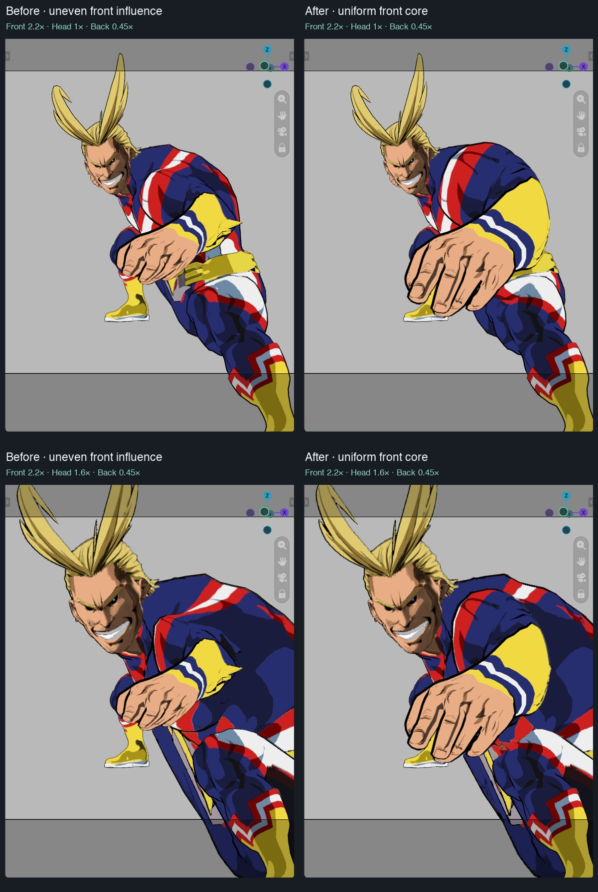

The prior front mask attenuated and varied scale across the hand, while head size applied fully. A uniform central area now receives the actual Front size, followed by a compact, positive-slope transition to unchanged off-axis front geometry. Area radius specifies the uniform core; softness widens its transition. Head/back do not use this radial field.

Actual Metal screenshots, same camera and pose. Front is 2.2× and linked Back is 0.45×. Top: Subject 1×. Bottom: Subject 1.6×. The increased hand size now reads more consistently. Geometry sharing the head depth, including shoulder/torso parts, also responds to Subject size: these are depth regions, not anatomical selections.
Live isolation probe: changing Front 1→2.2 and radius 0.75→0.1 moves the head, head-normal mesh and iris by exactly zero. Off-axis shoes also remain unchanged. Hair extending outside the depth slab has a small nonzero response. Head/back match Whole subject mode exactly in the synthetic fixture.
21 geometry/UI runs pass across macOS Blender 4.2.23, 4.3.2, 4.4.3, 4.5.15, 5.0.1, 5.1.2 and 5.2.2. Uniform-core error is below 8e-8; outer identity error below 4e-7. 5.2.2 warm 32,001-point update median: 1.12 ms, p95 1.32 ms. No topology growth, Python vertex loop, new reduction or extra timer.
The transition outside the uniform core can still change local proportions; support widens with enlargement to maintain radial order. No general arbitrary-mesh intersection guarantee. Physical Windows replay remains open. Installed/live schema32; scene values restored and no blend saved.